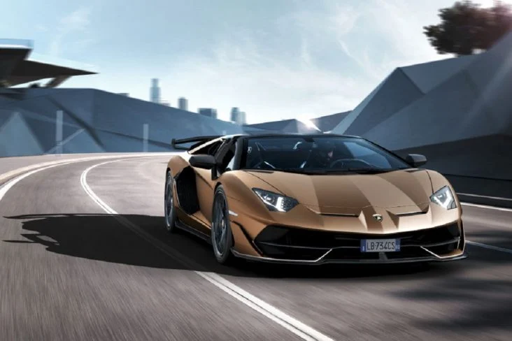

Lamborghini Aventador é um carro esportivo de motor central produzido pela fabricante italiana Automobili Lamborghini entre 2011 e 2022. Foi apresentado oficialmente durante o Salão Internacional do Automóvel de Genebra de 2011 como sucessor do Lamborghini Murciélago. Ele é codificado como LB834 e LB835 para a versão roadster. O Aventador foi publicamente anunciado no Geneva Motor Show em 28 de Fevereiro de 2011. Em 2022, sua produção foi encerrada, sendo sucedido pelo Lamborghini Revuelto, primeiro modelo V12 híbrido plug-in de produção da Lamborghini.
